NotLight is a simple Spotlight GUI front end. In order to clarify what that means, perhaps I should explain what Spotlight is.
On your computer, the system maintains an invisible index, containing information about the files on your computer. This is the Spotlight “back end”. It isn’t perfect: in particular, it ignores certain kinds of file and it ignores files in certain locations, and there is no good way to change this. Plus, if you introduce a volume Spotlight has never seen before, there’s no index, so Spotlight is useless. Nevertheless, it’s a fairly cool system. The index is constantly being updated, and it includes a lot of interesting information about each file, such as its name, its type, its content (if Spotlight knows how to “read” the file), its comments, and so on.
The reason this index is useful is that you can search it. And because it’s an index, maintained in some readily searchable internal format, searches on some types of information are very fast.
The Spotlight search engine obeys commands called “queries”. These queries are constructed as pure text, in a well-defined syntax, and can be quite powerful. Which brings us to the problem — namely, that Apple does not give you a good way to form queries explicitly. The GUI front ends that Apple does provide actually take the power away from you, the user; you enter some words, but a word is not a query. Instead, the system forms the query for you, so you don’t really know, and you can’t really control, exactly what query you are forming. The result is often that your search doesn’t succeed and you don’t understand why.
Also, the GUIs themselves are poor. A Finder search isn’t bad — in recent years, it has become quite decent, really — but what you get when you click the “magnifying glass” icon in the menu bar, or press Command-Space, is a window unlike any other Mac window. It can’t be widened, it isn’t clear what to do, and the number of matches displayed is limited. Most important, you don’t get any access to the numerous search configuration parameters.
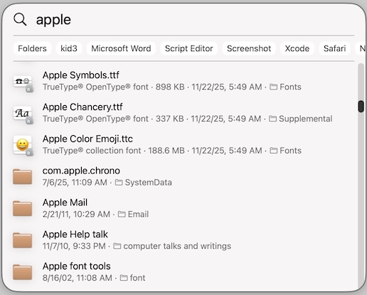
Behind the scenes, however, a Spotlight query is a very powerful thing, with a lot of great options:
A Spotlight query can be literal or it can use a wildcard (*) to indicate “any number of characters”.
A Spotlight query can be whole-match or word-based. A whole-match is successful only if the query matches the entire key being matched. But a word-based match is successful if the query matches any word of the key.
A Spotlight query can be sensitive or insensitive to case, and to the presence of diacritics.
A Spotlight query can be a boolean combination of search terms. Two terms can be joined by AND or by OR, and a term can be negated with NOT.
So, for example, you are allowed to present Spotlight with a search such as this:
((kMDItemAuthors == "Kevin"wc || kMDItemAuthors = "Steve"wc) && (kMDItemContentType == "audio"wc || kMDItemContentType = "video"wc)) && (kMDItemFSContentChangeDate > $time.this_week)
That expression means: An audio or video file, whose authors include Kevin or Steve, and that was modified within the past week. Wonderful — except that you can’t form and submit that search using Apple’s own built-in GUI front ends! The only way you could do it would be to use mdfind in the Terminal.
And that brings me to the purpose of NotLight. Between Apple’s Spotlight GUI front ends and the Terminal, there needs to be a simple GUI front end that helps the user form real Spotlight searches. And that’s what NotLight is intended to be.
NotLight helps you form and execute real Spotlight queries. Its interface is deliberately simple, and is designed to inspire confidence and ease of use; for example, only a few search keys are implemented by default, and you can form only one search term at a time. Nevertheless, NotLight’s behaviour out of the box should be enough to allow most users immediately to form the vast majority of searches they’re interested in.
Furthermore, NotLight has “power user” features that allow you to form any Spotlight query. Searches can be combined using Boolean operators. Search keys can be added to NotLight’s repertoire. And, if you really want to, you can enter and submit your own query “by hand,” just as you would with mdfind in the Terminal.
To construct a search term, you do three things:
Choose a search key. The search key is the feature of the file that you want to match. By default, NotLight gives you a choice of eight keys: Display Name, Full Name, Content, Finder Comment, Extension, Type Code, Creator Code, and Modified Date. When you choose a key, the text in the middle of the window changes to describe the nature of that search key.
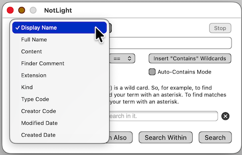
Type a search string. This is the string that will be matched against the key. For example, if you type apple as your search string, and if you have chosen Display Name as your key, Spotlight will find files named apple. However, for many kinds of search you can also use a wildcard (*). So if your search string was apple*, you would also find files named applesauce, and if your search string was *apple*, you would also find files named dappled.
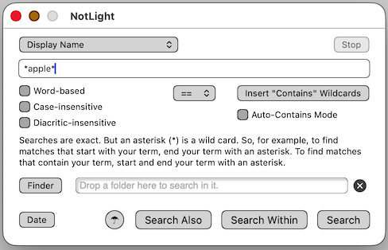
Specify further options. These options are the checkboxes beneath the search string, and they can make a big difference to the results. For example, if you type apple as your search string, and if you have chosen Display Name as your key, you won’t match a file named Apple — but you will if you check Case-insensitive. Even then you won’t match a file named Life In The Big Apple — but you will if you check Word-based.
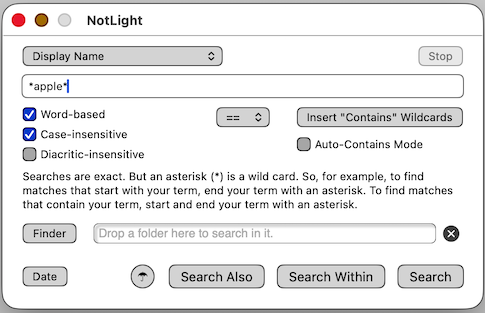
I haven’t talked about the == popup menu in the middle of the window. This menu changes the search term operator from == to != [“not”], >= [“greater than or equal to”], or <= [“less than or equal to”]. Don’t change this popup menu unless you know what you’re doing. Using the “not” operator can cause you to end up with a lot of results, and NotLight isn’t really prepared to handle that; plus, there are many known bugs in Spotlight’s handling of this operator. The “less than” and “greater than” operators are meaningful only for numeric and date searches; I discuss date searches later on.
Real-world tests indicate that some users have trouble with the notion that in order to implement a “contains” search, you have to insert an asterisk at the start and end of the search term. Apple’s Spotlight interfaces obviate the necessity for this by performing the insertion for you — without telling you. That is one of the things I don’t like about Apple’s Spotlight interfaces; I want to know, and to be in charge of, exactly what search I’m performing. Nevertheless, “contains” searches are a common need and are what people are accustomed to from Apple’s Spotlight interfaces, so I’ve added two features to NotLight to make doing a “contains” search easier.
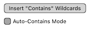
The Insert “Contains” Wildcards button does exactly that: it types an asterisk at the start and end of the search term for you.
The Auto-Contains Mode checkbox goes even further: it inserts asterisks at the start and end of the search term behind the scenes. In other words, if you’re in Auto-Contains mode, then (for example) you might enter apple as your search term, and you will see apple as your search term, but in actual fact the search term will be *apple*. I don’t like this feature, and I don’t recommend using it. It requires that NotLight perform transformations in secret; those transformations are risky, and the whole purpose of NotLight is to avoid secrets. Nevertheless I’ve got users who rely on it, so there it is.
To perform the search consisting of the term described in the window, click the Search button, or press Return within the search string field. The search is performed. The progress of the search is shown at the top of the window, first as Spotlight gathers the results, and then as NotLight prepares those results for display; during this time, you can click Stop to cancel the search if things are taking too long or too many matches are resulting.
When the results are ready, they appear in a dialog.
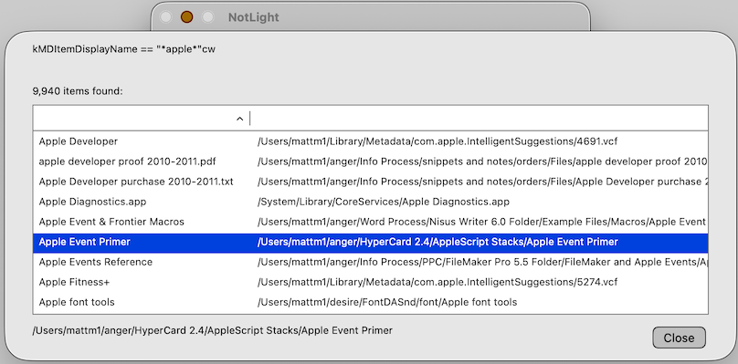
The actual Spotlight query is displayed at the top of the dialog. You also see how many matches there were. You can sort on a column. You can resize the dialog. You can select a match to see its path at the bottom of the dialog.
By default, columns for the display name and path are shown. Optionally, you can display columns for file icon, modification date, and file size. To set whether or not to display these optional columns, choose from the Option menu. (You cannot do this when the results dialog is showing; do it before performing a search.) You can choose Option > Show File Icons, Option > Show Mod Dates, and Option > Show File Sizes.
WARNING: The display of additional data requires extra time for the data to be gathered. You will notice this as an increased delay, both during the search and between the completion of the search and the display of the dialog. If this delay is bothersome, don’t ask for the additional data to be displayed (uncheck the three Option menu items).
File sizes are not reported for folders — including bundles and packages, which includes most Mac OS X–native applications. That’s because this information is not reported by Spotlight. Remember, NotLight is just a Spotlight front end; if Spotlight doesn’t provide information, NotLight can’t provide it either.
To reveal a file in the Finder, double-click the row in the dialog.
To close the dialog, click the Close button.
There are two ways to form Boolean searches — the easy way and the power-user way. I’ll describe the easy way first.
In the easy way, you perform a search and then modify it by appending a further search term to it. For example, look at the previous search (above). We found 9940 items. Suppose that’s too many. We want to restrict the search to get fewer matches. So we close the dialog, and we enter another search term. Let’s say we want only those matches, among the previous set of matches, whose name also contains the word font.
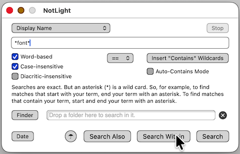
We enter the search criteria, but here’s the important thing. We don’t click the Search button. We want to search within the existing set of matches, so we click Search Within. The result is that we find files whose names contain apple and also contain font. That’s a much smaller set of matches. Notice that the result dialog shows what has really happened: we’ve done an AND search (&&) combining both terms.
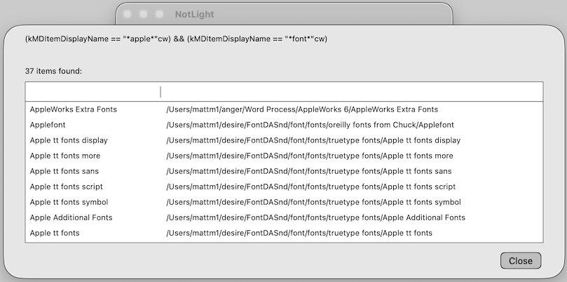
Similarly, if you wanted to expand from the base of your previous search results, you’d form a term and click Search Also. So you’d be finding the previous results and also the matches for the new search term. Behind the scenes, what’s being formed for you is an OR search.
The way this feature works is simple. Every time you do a search, the query is remembered, just in case you want to use it again. If you form a term and click Search, the previous search is thrown away; you’re doing a whole new search. But if you form a term and click Search Within or Search Also, the new term is combined with the previous search using an AND or an OR operator.
That brings me to the power-user way for forming complex searches. The easy mode of forming a complex search simply iterates one search term at a time: you do a search, then restrict it with Search Within or expand upon it with Search Also. But let’s say you know right from the start that you want to form an AND search. Then you could do this: Create the first term, and click Search, but as you do, hold down the Option key. This means: “Don’t actually do the search! Just create the search term and keep it as the current search, as if you had done the search.” Then you would create the second term. At this point you could click Search Within and do the search — or, you could click Search Within while holding the Option key, causing the new term to be ANDed to the current search, still without actually doing the search.
But wait, there’s more! At any time, you can inspect the current search that’s being assembled, by clicking the “Mary Poppins” button at the lower left of the window to see the current search in a popover. If you’re satisfied that this is the search you want, you can perform it. You don’t even need to dismiss the popover first; you can do the search by clicking the Do This Search button in the popover.
The field in the “Mary Poppins” popover that displays the current search can be made editable — just double-click it. That gives you an even more powerful power-user way to enter a search: you can type it directly, and then perform it by clicking the Do This Search button. That way, you can construct really complex Boolean search requests involving parentheses and so forth. However, you also have to really know what you’re doing.
NotLight includes by default two commonly used date search keys, Modified Date and Created Date. Date values have to be entered according to special Spotlight query rules, so to help you with this, NotLight includes the Date Assistant. Choose Option > Date Assistant to see it, or click the Date button in the main NotLight window.
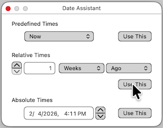
There are three ways to describe a date in Spotlight query syntax, so the Date Assistant has three sections. When you have formed the date you’re after, click the Use This button in the appropriate section, and the date will be entered into NotLight’s main window. All Spotlight dates are exact date-times (not mere days of the calendar), so you will surely never want to leave the operator popup set to ==, since the chances of a file date matching some exact date and time are vanishingly small. So, for example, to find all files modified in the past week, change the operator popup to >= (meaning that the modification date is more recent than the beginning of that one-week period).
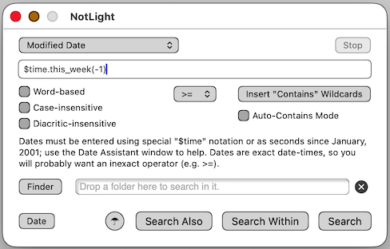
Another feature of Spotlight searches is that you can restrict the search to look inside only a certain folder or folders. To use this feature, navigate to a folder in the Finder and drag it into the area that says “Drop a folder here to search in it.” You can drag an additional folder, or click the X button to remove a folder criterion, to form the set of folders you are interested in searching.
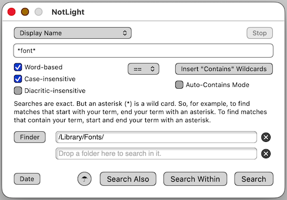
Alternatively, if the folder you want to search in is already open in the Finder as the frontmost Finder window, click the Finder button in the NotLight window to copy the path of the frontmost Finder window into NotLight.
If you use the folder restriction feature, just remember that the way Spotlight works is that the restriction applies to the entire search, not (like everything else in the window) just to the term you are forming.
If you find yourself wishing to search on a search key other than the keys provided by default in NotLight’s popup menu, you can append additional search keys to the menu. For example, let’s say you often do a search based on a document’s author; it would be convenient if NotLight’s popup menu had a Document’s Author item, so you could use NotLight to form such a search easily.
To append search keys to the popup menu, choose Option > Search Keys... to summon the dialog listing all search keys you’ve added to the popup menu. (NotLight’s default search keys are not listed.) To add a search key, click the Add button. In the first column, enter the text you want see in the popup menu. In the second column, enter the MDQuery search key. Optionally, you can add text to the Notes field; this text will appear in the middle of NotLight’s window when you choose this item from the popup menu. When you’re finished editing your appended search keys, click the Done button.
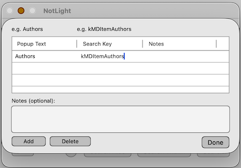
It is crucial to know and to enter correctly in the second column the MDQuery search key you want to use, so that NotLight will form the query correctly. (Terminology warning: Apple calls these search keys “metadata attributes”.) Spotlight’s default search keys are listed on this page. Or, use the mdls command in the Terminal to see a list of all search keys attached to a given file. Or, say mdimport -A or mdimport -X in the Terminal to see a list of all search keys currently being indexed.
You can save a search that you are likely to use frequently, so that you can load it again later. To do so, summon the “Mary Poppins” popover and click the Save This Search button.
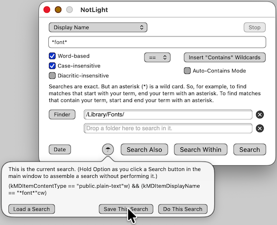
What is saved is what’s displayed as the current search right now, along with any folder restrictions. (In other words, the checkboxes and the search string field in the main window are irrelevant, because you have not actually formed a search with that information until you’ve either performed the search or used the Option key to move that information into the current search.)
The saved search is very simple XML, which is cool because it means you can edit the search with any text editor.
To load a saved search, summon the “Mary Poppins” popover and click the Load a Search button. The search becomes the current search, but it is not performed unless you now also click Do This Search.
Special thanks to the users and beta testers who made suggestions and who experimented carefully and thoroughly. The honor roll: